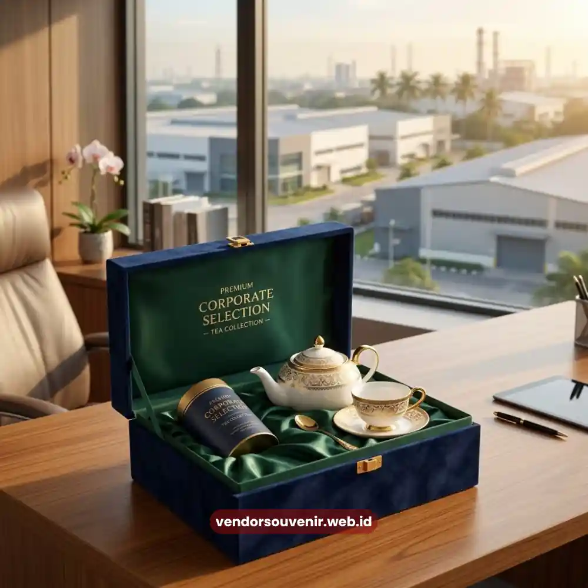

Daftar Isi
Tea set perusahaan Surabaya adalah pilihan hadiah korporat berbahan keramik atau bone china dengan custom logo.
Hadiah ini sangat relevan untuk kantor di kawasan bisnis dan industri seperti HR Muhammad dan Rungkut Industri.
Seminarkit ID melayani pemesanan tea set dengan pengiriman ke Surabaya beserta opsi custom logo.
- Tea set tersedia dalam variasi set cangkir hingga set premium bone china.
- Melayani pengiriman ke kantor di kawasan bisnis dan industri Surabaya.
- Custom logo tersedia melalui laser engraving atau cetak digital.
- Kemasan gift box premium mendukung kesan profesional untuk klien.
- Kuantitas dapat disesuaikan dengan jumlah penerima hadiah korporat.
Variasi Tea Set untuk Kantor di Kawasan HR Muhammad dan Rungkut Industri
Kantor yang berlokasi di kawasan HR Muhammad maupun kawasan industri Rungkut umumnya membutuhkan hadiah korporat yang praktis.
Namun, hadiah tersebut harus tetap terlihat profesional untuk relasi bisnis maupun mitra industri.
Variasi tea set yang direkomendasikan untuk kebutuhan tersebut meliputi:
- Set cangkir dua buah dengan kemasan box custom logo untuk hadiah ringan saat kunjungan klien.
- Set teko dan cangkir dengan kemasan gift box untuk hadiah formal kepada mitra bisnis.
- Set premium bone china dengan magnetic box untuk hadiah kepada relasi industri tingkat senior.
Kombinasi ini dapat disesuaikan lagi tergantung tingkat formalitas acara.
Selain itu, bisa disesuaikan dengan jumlah penerima hadiah di masing-masing perusahaan.
Tea Set sebagai Solusi Hadiah Korporat di Surabaya
Kebutuhan hadiah korporat di Surabaya sering terkait dengan agenda bisnis perusahaan manufaktur maupun kantor komersial.
Perusahaan-perusahaan ini tersebar di berbagai kawasan kota.
Untuk perusahaan yang sering menerima kunjungan mitra bisnis, set cangkir dengan kemasan ringkas menjadi pilihan praktis.
Pilihan ini tetap terlihat profesional di mata klien.
Sementara untuk momen formal seperti penandatanganan kerja sama dengan mitra industri, set premium bone china lebih sering dipilih.
Kemasan magnetic box memberikan kesan yang jauh lebih berkelas.
Tea set juga dapat dikombinasikan dengan item lain dalam satu hampers.
Kombinasi ini sangat cocok untuk kebutuhan acara korporat berskala lebih besar.
Melayani pemesanan tea set perusahaan Surabaya, tim produksi dapat menyesuaikan variasi set.
Penyesuaian ini berdasarkan kebutuhan dan anggaran yang disampaikan di awal konsultasi.

Gift Box Tea Set Premium
Opsi Custom Logo untuk Tea Set Perusahaan Surabaya
Custom logo pada tea set membantu perusahaan di Surabaya menghadirkan hadiah yang lebih personal.
Hal ini juga sangat mencerminkan identitas brand perusahaan.
Logo dapat diaplikasikan menggunakan teknik laser engraving untuk hasil ukiran presisi pada permukaan keramik.
Atau, bisa menggunakan cetak digital untuk desain logo dengan warna lebih variatif.
Penempatan logo dapat disesuaikan pada badan cangkir, teko, maupun kemasan gift box.
Semuanya dikerjakan sesuai dengan preferensi tim procurement.
Perusahaan di kawasan HR Muhammad, Rungkut Industri, maupun area bisnis Surabaya lainnya dapat mengirimkan file logo terlebih dahulu.
Hal ini dilakukan untuk simulasi desain sebelum proses produksi dimulai.

Solusi Gift Set dari Vendor Terpercaya
Kuantitas dan Waktu Produksi Tea Set Perusahaan Surabaya
Waktu produksi tea set menyesuaikan teknik custom logo dan jenis kemasan yang dipilih.
Estimasi waktu ini akan disampaikan di awal proses konsultasi.
Pesanan untuk kantor di Surabaya umumnya diproses lebih awal untuk mengakomodasi jadwal pengiriman.
Terutama untuk pesanan dengan kemasan magnetic box custom yang membutuhkan waktu produksi lebih panjang.
Perusahaan disarankan melakukan pemesanan setidaknya beberapa minggu sebelum tanggal acara atau kunjungan mitra bisnis.
Ingin Memesan Tea Set untuk Relasi Bisnis di Surabaya?
Kami siap membantu pengadaan corporate gift Anda dengan layanan terbaik.
Konsultasikan desain logo dan pilihan box eksklusif Anda kepada tim kami.
Mari ciptakan impresi elegan untuk mitra bisnis Anda.
Dapatkan penawaran harga terbaik untuk pesanan korporat!
FAQ
Apakah melayani pengiriman tea set ke Rungkut Industri dan HR Muhammad?
Ya, kami melayani pengiriman tea set korporat ke seluruh kawasan bisnis dan industri di Surabaya, termasuk HR Muhammad dan Rungkut Industri.
Apakah bisa custom logo pada tea set?
Bisa, logo dapat diaplikasikan menggunakan teknik laser engraving atau cetak digital pada permukaan keramik.
Berapa lama waktu produksi tea set custom logo?
Waktu produksi menyesuaikan teknik custom logo dan jenis kemasan yang dipilih, disarankan memesan beberapa minggu sebelum acara.
Maroon Souvenir
Partner Corporate Gift terpercaya di Indonesia. Berpengalaman melayani ratusan perusahaan sejak 2018.
Lihat Portofolio Kami